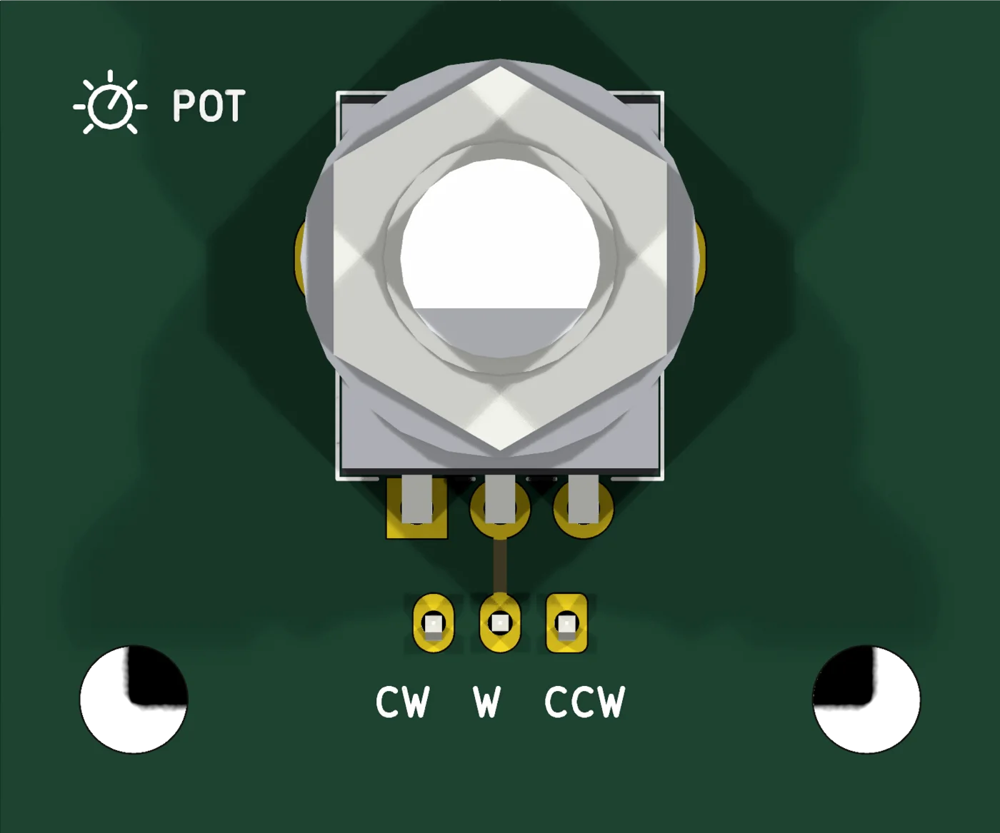
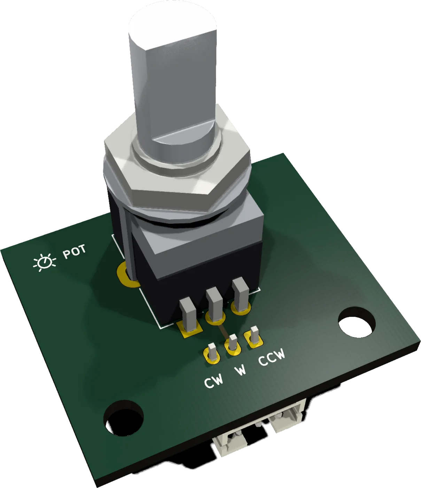
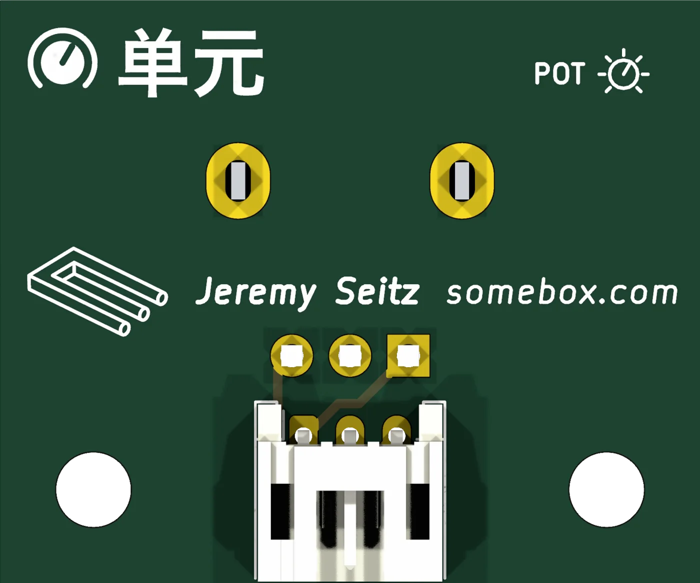
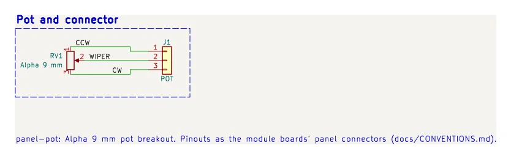

Pot breakout: one 9 mm pot on a lead
A small board for one Alpha 9 mm pot with a JST PH connector on its back, so the pot is wired with a lead instead of bare wires.
A small board for one Alpha 9 mm pot, so the pot is soldered to a board with a connector instead of to bare wires. I made these to wire a module's controls with ready-made leads. The pot sits on the front, towards the panel, and a side-entry JST PH connector on the back, its mouth at the bottom edge, so the lead runs down behind the panel. The pot's nut holds it to the panel, and the pot holds the breakout.
A straight-through PH lead joins it to a module's pot connector: both use the same pinout. The pot's end voltages and any protection are on the module. Two M3 holes, in the same place on every breakout, take standoffs or a printed holder. The pins are named on the front. Not built yet.
- Status
- In the first test order, being placed
- Version
- v1.1.3 (2026-10-27)
- Board
- 30 × 25 mm, 2 layers
- First order
- 20 bare boards
- Progress
- follow its tracking issue



What it does
- One Alpha 9 mm pot, any value, with snap-in tabs.
- A 3-pin JST PH side-entry connector on the back: 1 CCW, 2 wiper, 3 CW.
- 30 × 25 mm; the pot on the centre line, 7.75 mm from the top.
- Two M3 holes, 4 mm in from the sides and the bottom, 22 mm apart.
- Through-hole parts only, soldered by hand.
Pins
| 1 | CCW |
| 2 | W |
| 3 | CW |
Wiring and setup
- A straight-through 3-pin PH lead to the module's pot connector, pin 1 to pin 1.
- The legend on the front reads CW, W, CCW from left to right: the connector is on the back, so its pin 1 is on the right as seen from the front.
- Every breakout puts its part at the same height, so breakouts side by side line up.
Limits and open questions
- Not built yet.
- In the first version the pot's pins came within 0.15 mm of the connector's housing on the other side. The connector now sits 1 mm lower, leaving 1.15 mm.
Development notes
- The breakouts grew from 15 × 24 mm to 30 × 25 mm so all four could share the same two M3 holes.
- No LED breakout: panel LEDs are wired by hand.
Schematic
The schematic as drawn, with each chip named by its function rather than its part number. The design isn't open source yet, so there are no files to download.


Would you use a POT? A thumbs-up on its tracking issue is how I count interest, and you can subscribe there to follow its bring-up. Questions and ideas go to the discussions.